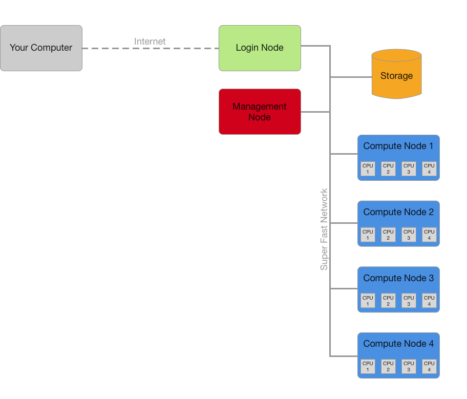
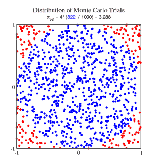

<!doctype html>
<html>
	<head>
		<meta charset="utf-8">
		<meta name="viewport" content="width=device-width, initial-scale=1.0, maximum-scale=1.0, user-scalable=no">

		<title>Introduction to the Research Cloud</title>

		<link rel="stylesheet" href="revealjs/css/reveal.css">
		<link rel="stylesheet" href="revealjs/css/theme/serif.css">

		<!-- Theme used for syntax highlighting of code -->
		<link rel="stylesheet" href="revealjs/lib/css/zenburn.css">

		<link rel="stylesheet" href="font-awesome-4.6.3/css/font-awesome.min.css">

		<!-- Printing and PDF exports -->
		<script>
			var link = document.createElement( 'link' );
			link.rel = 'stylesheet';
			link.type = 'text/css';
			link.href = window.location.search.match( /print-pdf/gi ) ? 'revealjs/css/print/pdf.css' : 'revealjs/css/print/paper.css';
			document.getElementsByTagName( 'head' )[0].appendChild( link );
		</script>
	</head>
	<body>
		<div class="reveal">
<div class="slides">
<section data-markdown data-separator="---" data-separator-vertical="^\n--\n$">
<script type="text/template">

## High Performance Computing

---
<i class="fa fa-twitter" aria-hidden="true"></i> @dwjperry
---


Note: At this very moment someone is sitting at their computer, waiting. Waiting for their simulation to run. Waiting to process that big dataset. All they can do is browse Facebook, and wait for time to pass.

---


Note: But it never works first time. You need to change something, and wait some more.

---


Note: Then your supervisor comes along and asks you to add just one more little thing. Now everything takes a hundred times longer and you'll be long dead before your job finishes. Rage!

Hours and hours wasted. Questions going unanswered.

Once this was a problem for those working on niche problems. Now almost everyone is dealing with huge datasets and complex problems which their own computers just can't handle.

---

##Solution:

---

## Supercomputer!


Note: HPC is just the fancy name for using a supercomputer.

---

## What is it?

---

Just a bunch of computers (hundreds to *millions*) tied together.

---



---

## How does it work?


---

### 1\. Using a job script, explain what you want:
- What resources
- For how long
- What software

---

### Example: Estimate π using Monte Carlo Method



<small>(from http://people.chem.ucsb.edu/kahn/kalju/MonteCarlo_1.html)</small>

---

### Our Code


<pre><code class="python" style="max-height: 90vh"># Based on https://gist.github.com/amitsaha/2036026
import random

# Calculate the number of points in the unit circle
def monte_carlo_pi_part(n):
    count = 0
    for i in range(n):
        x = random.random()
        y = random.random()

        # if it is within the unit circle
        if x * x + y * y <= 1:
            count += 1

    return count

if __name__ == '__main__':
    print 'Run across a single CPU'

    # Number of points to simulate (50 million)
    n = 50000000

    # Run simulation
    count = monte_carlo_pi_part(n)

    print "Estimated value of Pi:: ", count / (n * 1.0) * 4
</code></pre>

---

### Our Job Script

```
#!/bin/bash
#SBATCH --ntasks=1
#SBATCH --cpus-per-task=1
#SBATCH --time=0-1:00:00

# Load required modules
module load Python/2.7.11-GCC-4.9.2

# Run our python script (and measure how long it takes)
time python pi_1.py
```

---

### 2\. Submit the script.

<pre><code class="bash">[perryd@spartan ResPitch]$ sbatch pi_1.slurm
Submitted batch job 445887
</code></pre>

---

### 3\. Job starts once resources are available.

<pre><code class="bash">[perryd@spartan ResPitch]$ squeue -u perryd
JOBID PARTITION     NAME     USER ST       TIME  NODES NODELIST(REASON)
446196     cloud pi_1.slu   perryd  R       0:05      1 spartan-rc037
</code></pre>

Note: This is a shared system, everyone else is running their job too. Yours will run as soon as some space is available.

---

### 4\. Success!


---

### What's the catch?

---

Your software must know how to make use of the resources, or else:


Note: Remember it's lots of computers tied together, not one really powerful one. Each unit is no faster than your own computer, so you need to work out how to split up your computation.


---

### How?

1. Embarrassingly parallel, run anywhere (easiest).
2. Run across multiple CPUs on a single node, sharing memory.
3. Run across multiple nodes, passing messages between them.


*(Your software might figure this out for you!)*

Note: How you actually do this depends on your software. Different languages will have different libraries. Some application software will handle this for you automatically.

---

Let's try faster (across multiple CPUs)...

<pre><code class="python"># Snippet of pi_2.py
if __name__ == '__main__':
    print 'Run across 4 CPUs'
    np = 4

    # Number of points to simulate (50 million)
    n = 50000000

    # Split up across CPUs
    part_count = [n / np for i in range(np)]

    # Run simulation in parallel
    pool = Pool(processes=np)
    count = pool.map(monte_carlo_pi_part, part_count)

    print 'Estimated value of Pi:: ', sum(count) / (n * 1.0) * 4
</code></pre>

---

<pre><code class="bash">#!/bin/bash
#!/bin/sh
#SBATCH --ntasks=1
#SBATCH --cpus-per-task=4
#SBATCH --time=0-1:00:00

# Load required modules
module load Python/2.7.11-GCC-4.9.2

# Run our python script (and measure how long it takes)
time python pi_2.py
</code></pre>

---

## Your turn!

---

### Use a supercomputer to cheat at:
* Sudoku: https://git.io/vDdGv
* Writing Shakespearean prose: https://git.io/vDdsh

---

### Want to learn more?

Sign up for our next training workshop:

---


</script>
</section>
</div>
		</div>

		<script src="revealjs/lib/js/head.min.js"></script>
		<script src="revealjs/js/reveal.js"></script>

		<script>
			// More info https://github.com/hakimel/reveal.js#configuration
			Reveal.initialize({
				history: true,

                transition: 'concave', // none/fade/slide/convex/concave/zoom

				// More info https://github.com/hakimel/reveal.js#dependencies
				dependencies: [
					{ src: 'revealjs/plugin/markdown/marked.js' },
					{ src: 'revealjs/plugin/markdown/markdown.js' },
					{ src: 'revealjs/plugin/notes/notes.js', async: true },
					{ src: 'revealjs/plugin/highlight/highlight.js', async: true, callback: function() { hljs.initHighlightingOnLoad(); } }
				]
			});
		</script>
	</body>
</html>
